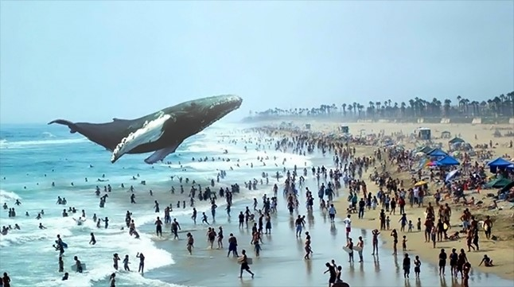
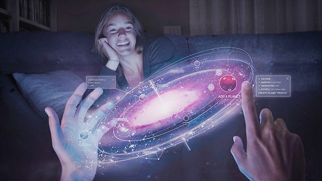
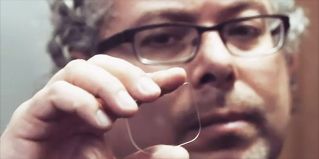
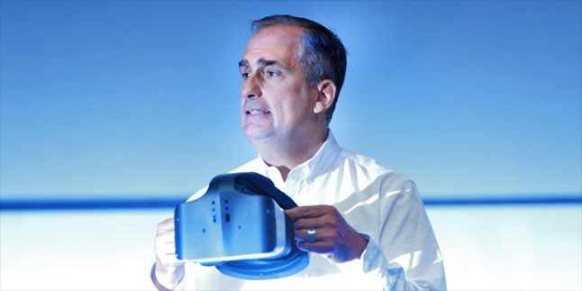
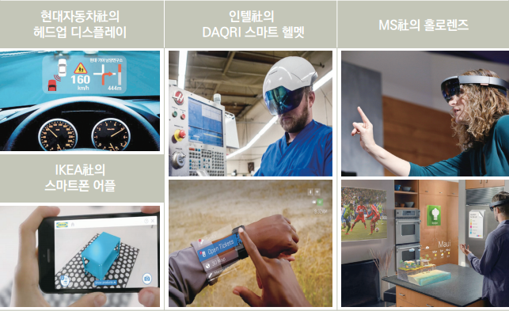
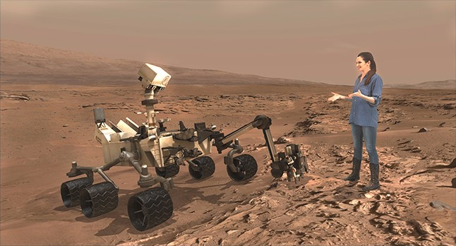
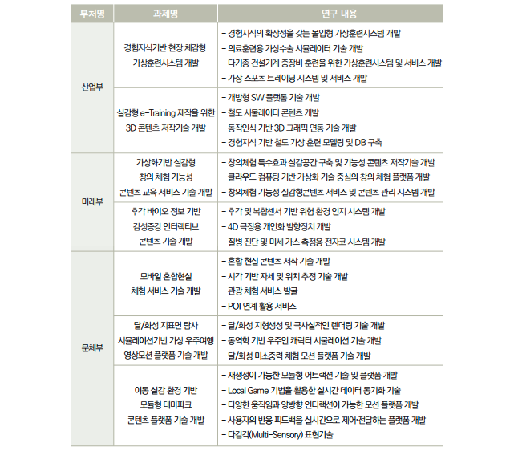

MR(혼합현실)은 VR과 AR의 기능을 합쳐놓은 것인데 AR이 현실 세계에 부가적인 정보를 보이는데 반해
MR은 가상의 물체를 현실 공간에 올려 놓거나 현실의 물체를 인식해서 그 주변에 가상의 공간을 구성하는
기술입니다. MR은 수 년 전부터 TV. 모니터, 스크린 등의 출력 기기를 없앨 수 있는 강력한 기술이라는
기대를 받아 왔습니다. 우리가 영화에서 보아왔던 홀로그램 기술을 현실화시켜줄 것으로 여겨질 정도로
MR의 잠재력은 무궁무진합니다.

혼합현실(MR) 사례 <출처: 매직리프>
어느 한 학교의 체육시간. 수업을 듣기 위해 삼삼오오 학생들이 무리를 지으며 체육관에 들어섰다. ‘오늘은 무슨 수업을 할까?’ 기대에 찬 눈빛으로 선생님을 바라보기 무섭게, 체육관 바닥이 갈라지더니 갑자기 거대한 고래가 튀어나온다. 고래는 물 한 방울도 없는 체육관을 바다인 양 유유히 헤엄친다.
실내체육관에서 고래가 튀어나오는 매직리프 MR 동영상 <출처: 유튜브 ‘Tusa Tuc’>
실내체육관 한복판에서 튀어나온 고래 한 마리. 그 모습이 어찌나 실감나는지, 마치 실제로 고래가 바다에서 솟구친 것 같다. 이 영상은 미국 매직리프(Magic Leap)가 선보인 ‘혼합현실(Mixed Reality, MR)’ 영상이다. 별도의 안경도, 장비도 없이 체육관이 바다로 변할 수 있는 이유는 바로 이 혼합현실 기술 덕분이다.
증강현실(AR)의 현실감 + 가상현실(VR)의 몰입도

혼합현실(MR) <출처: 매직리프>
한 번쯤 ‘증강현실(Augmented Reality, AR)’이나 ‘가상현실’(Virtual Reality, VR)’이란 말을 들어봤을 것이다. 증강현실(AR)은 영화 <아이언맨>에서 아이언맨 슈트를 착용한 주인공이 명령을 내릴 때 등장하는 화면을, 가상현실(VR)은 영화 <메트릭스>에서 주인공이 접한 컴퓨터 세계를 떠올리면 된다.
증강현실(AR)은 현실에 3차원 가상 이미지를 겹쳐서 보여주는 기술이다. 필요한 정보를 디스플레이 기술 등을 통해 보여준다. 가상현실(VR)은 현실이 아닌 100% 가상의 이미지를 사용하는 기술이다. 특수 제작된 고글 모양의 헤드셋을 써야 가상현실(VR)을 경험할 수 있다.
여기에서 한 단계 더 나아가, 현실세계와 가상세계 정보를 결합해 두 세계를 융합시키는 공간을 만들어내는 기술을 ‘혼합현실(MR)’이라고 한다. 증강현실(AR)과 가상현실(VR)의 장점을 따온 기술이다. 혼합현실(MR)은 현실세계와 가상 정보를 결합한 게 특징이다.
매직리프가 혼합현실(MR) 기술을 활용한 영상. 컴퓨터로 만든 이미지가 실제로 존재하는 것처럼 보이는 게 특징이다. <출처: 매직리프 유튜브 채널>
혼합현실 기술 연구개발 동향 및 전망 보고서에 따르면, 혼합현실(MR)은 실제 환경의 객체에 가상으로 생성한 정보, 예를 들어 컴퓨터 그래픽 정보나 소리 정보, 햅틱 정보, 냄새 정보 등을 실시간으로 혼합해 사용자와 상호작용 하는 기술이다. 정보의 사용성과 효용성을 극대화한 차세대 정보처리 기술로 손꼽히고 있다.
앞서 선보인 매직리프가 개발한 혼합현실(MR)은 사실감을 극대화한 3D 입체영상을 사용자가 있는 현실 공간에 구현한다. 매직리프는 그래핀을 소재로 한 ‘포토닉스 칩’을 통해 웨어러블 기기 없이 현실 공간에 가상정보를 보이게 만드는 기술을 개발했다. 그 덕분에 관객은 별도의 장비를 착용하지 않고도 맨눈으로 실제와 같은 가상현실을 접할 수 있다. 이를 위해서는 고해상도 3D 이미지와 수많은 초소형 프로젝터가 필요하다. 그래야 실제와 같은 이미지를 사용자에게 보여줄 수 있다.

매직리프 MR의 핵심 중 하나인 그래핀을 소재로 한 투명한 ‘포토닉스 칩’을 들고 있는 매직리프의 CEO 로니 애보비츠. 포토닉스는 빛을 이용해 신호를 보내 정보전달을 다루는 기술이다. <출처: The Verge>
매직리프 외에도 구글, 마이크로소프트, 애플, 인텔, 페이스북 등 다양한 글로벌 IT기업이 혼합현실(MR)에 관심을 보이고 있다. 마이크로소프트는 ‘홀로렌즈’를 통해 현실과 상호작용할 수 있는 기기를 선보였으며, 인텔 역시 ‘인텔 개발자 포럼 2016(IDF 2016)’에서 융합현실 프로젝트 ‘얼로이(Alloy)’를 소개한 바 있다. 현실과 상호작용을 할 수 있다는 증강현실(AR)의 장점과, 장비를 통해 실제와 가상의 경계를 허무는 몰입감을 제공하는 가상현실(VR)의 특징을 살려 다양한 분야에서 활용될 수 있기 때문이다.

인텔 개발자 포럼(IDF) 2016에서 프로젝트 ‘얼로이’를 소개하는 브라이언 크르자니크 인텔 최고경영자(CEO) <출처: 인텔코리아>
시각·청각·촉각 등 오감 활용
인간의 감각 중 80% 이상이 시각에 의존한다. 혼합현실(MR) 기술 중 가장 활용 분야가 높은 곳도 바로 시각 관련 MR이다. 자동차에서 보이는 헤드업 디스플레이, 이케아가 개발한 스마트폰 앱, 마이크로소프트가 선보인 홀로렌즈가 대표적인 시각 활용 MR이다.

시각 MR 기기들 <출처: 융합연구정책센터 ‘인간의 오감능력을 극대화시키는 혼합현실(MR) 기술(2016.5)’>
소리를 활용한 MR도 있다. 일상생활 속의 소리도 들으면서 추가적인 소리를 들을 수 있는 형태로 고막이 아닌 다른 방법을 통한 소리 전달 기기를 개발하는 식이다.
삼성전자가 2012년부터 운영 중인 사내벤처 육성 프로그램 ‘C-랩(Lab)’ 공모전에서 출발한 ‘팁톡’은 손가락 등 인체 일부를 매개체로 활용해 소리를 전달한다. 스마트워치에 모션 인식 모듈을 단 뒤, 스마트워치를 손목에 찬 채 손가락을 귓구멍에 대면 블루투스 이어폰 대신 손가락을 통해 상대방의 목소리가 들려온다. 현재 팁톡은 사내벤처에서 창업한 이놈들연구소가 개발·서비스하고 있다.
이놈들연구소가 선보인 ‘팁톡’ <출처: 이놈들연구소 페이스북>
촉각을 활용한 MR은 1990년에도 ‘햅틱’ 기술로 존재했다. 햅틱 기술은 사용자 입력 장치인 키보드, 마우스, 조이스틱, 터치스크린에서 힘과 운동감을 촉각을 통해 느끼게 하는 기술이다.
최근 의료용 수술로봇 개발에서 수술자의 감각을 높이기 위한 방법으로 촉각을 활용한 혼합현실(MR)이 등장하고 있다. 시각적인 디스플레이 상에서 터치 입력을 과거 버튼 입력 방식과 같은 느낌이 나게 만드는 식이다. 가상의 화면에 손을 갖다 대면 그 순간 갖다 댄 느낌을 진동 등으로 느낄 수 있다. 마이크로소프트는 시각 MR 기기인 홀로렌즈와 연동해 입력에 대한 피드백을 촉각으로 느낄 수 있게 시각과 촉각을 더한 MR 기기를 개발 중이다.
지도부터 우주여행까지, 활용 범위 확대 중
혼합현실(MR) 연구의 시작은 1960년대 이반 서덜랜드(Ivan Sutherland)의 ‘시쓰루(See-through) HMD’에 관한 연구가 꼽힌다. 1994년, 토론토대학의 폴 밀그램 교수는 ‘현실-가상연속성(reality-virtuality continuum)’이란 개념을 내놓기도 했다. 그는 MR 연구에서 현실감이 느껴지는 정도를 실제 세계와 가상 세계 사이에서의 연속 관계, 모델링 되는 정도, 사물을 보는 시점 및 사용 하드웨어와 기술 등 다양한 변수를 토대로 분석했다.
연구와 이론에서 출발한 혼합현실(MR)은 이제 우리가 일상적으로 사용하는 스마트폰 등 다양한 분야에서 활용되고 있다. 대표적으로 스마트폰 카메라를 통해 주위 공간을 비추면 지하철이나 버스정류장, 커피숍 위치 등을 보여주는 증강현실 앱도 혼합현실(MR)의 일부로 볼 수 있다.
MR 기술을 활용하면 손 안에 코끼리를 올려놓고 감상할 수도 있다. <출처: 매직 리프>
그 외에도 혼합현실(MR)은 조립가공, 검사, 의료, 자동차 및 로봇 산업 부문에서도 다양하게 활용되고 있다. 일본 주오대(中央大) 연구실은 MR 기술을 활용해 해안가 지역에 쓰나미가 밀어닥칠 때의 모습을 구현하거나, 지진이 일어날 경우 건물 내부에서 어떤 일이 발생하는지 연구했다.
미항공우주국(NASA)은 마이크로소프트와 함께 ‘목적지 화성(Destination: Mars)’이라는 체험 공간을 통해 일반인들이 우주 공간을 걸을 수 있도록 한 MR 프로젝트를 진행하고 있다. 이 프로젝트를 통해 관람객은 실제 화성 표면을 걸어 다니는 듯한 느낌을 받을 수 있다. 우주선을 타지 않고도 기술의 힘으로 우주를 간접 체험하는 것이다.

NASA와 마이크로소프트가 공동 진행 중인 MR 프로젝트, ‘목적지 화성’ <출처: NASA>
국내도 관련 연구가 활발히 진행 중이다. 시각적인 MR 콘텐츠 개발 위주로 사업이 이뤄지고 있다. 테마파크 등에서 시각 MR를 통해 실제와 같은 경험을 느끼거나, 의료 현장에서 활용되는 가상 수술 시뮬레이터와 같은 연구가 활발히 진행 중이다.
시각적 가상현실 콘텐츠개발 사업과제

국내에서 진행 중인 MR 연구들 <출처: 융합연구정책센터 ‘인간의 오감능력을 극대화시키는 혼합현실(MR) 기술(2016.5)’>
[네이버 지식백과]
혼합현실(MR) [Mixed Reality] - 현실 세계와 가상 세계를 넘나들다 (용어로 보는 IT, 이지영)